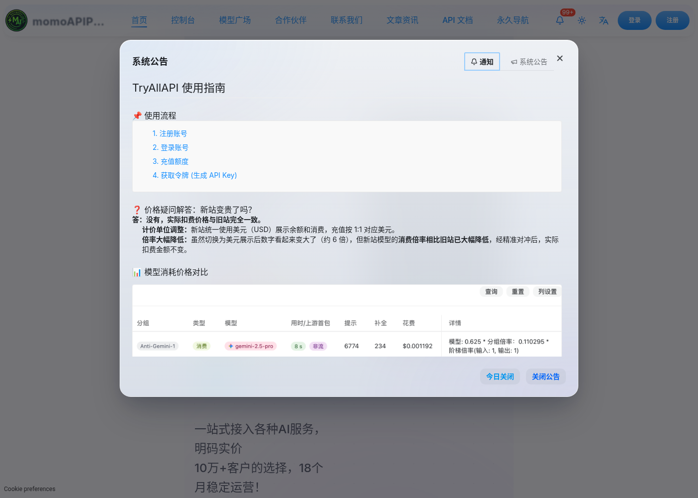

中文说明 · 关键词「gpt6 astra官网入口」· 2026-10
GPT6 Astra官网入口：在模型列表里找
社区检索说明 · 非 OpenAI 仿官网 · TryGPT / TryAllAPI / MomoAI
写在前面
你搜「gpt6 astra官网入口」，多半是想尽快搞清楚：哪里能安全地体验或调用相关模型，而不是点进一堆仿站、下载站或诱导跳转页。下面用中文把检索意图、命名差异、可用路径和风险一次说清。建议收藏本页与同系列内链，遇到改名或列表更新时可以对照复核，避免只凭搜索结果首页的广告位做决定。

命名提示：社区检索常出现 GPT-6、GPT-6.0、GPT-6.v、GPT-6.1（Terra / Sol / Luna / Astra）等写法。
正式名称以 OpenAI 当日公开文档与产品列表为准。本站是社区向中文说明，不是「GPT6.cn」一类仿官网，也不代表 OpenAI 官方中文站。
1. 「gpt6 astra官网入口」与 Astra 型号
社区讨论里，GPT-6.1 系列有时会按能力档位口语化为 Terra / Sol / Luna / Astra（是否上架、如何命名，以产品当日列表为准）。Astra 常被放在偏高能力或实验向的位置讨论，但这不是让你去找一个单独的「Astra 官网域名」。
- Terra / Sol：常被描述为更偏基础或主力对话档（社区说法）
- Luna：常被讨论为偏均衡 / 中高能力档
- Astra：常出现在更高能力或实验向讨论中
正确动作是：进入对话站或 API 控制台 → 在模型列表搜索 Astra / GPT-6.1 / 站点给出的精确 id → 用同一批提示词做对比。

2. 如何确认 Astra 是否可用
- 进入对话站或 API 控制台的模型列表
- 搜索 Astra / GPT-6.1 / 相关代号（拼写以站点为准）
- 若列表暂无，可先用同系列其他档位做对比体验
- 以实测延迟、质量与计费说明做最终选择
3. Astra 相关入口（网页 / API / 包月）
入口排查建议：先打开下列站点 → 搜 Astra / GPT-6.1 → 再决定是否付费。
也可在店铺浏览相关服务说明：https://wzyp.cn/shop/maynorai（仅供参考，非强制购买）。

4. 查找 Astra 的短步骤
5. 常见问题 FAQ
Astra 和 Terra / Sol / Luna 怎么选？
以站点说明与任务为准：轻量对话可先用较低成本档；复杂推理再试更高档（社区常把 Astra 放在偏高能力讨论里）。
列表里没有 Astra 怎么办？
可能尚未上架或名称不同。用最接近的 GPT-6.1 / 同系列条目，并关注站点更新。
有没有单独的 Astra 中文官网？
请勿轻信「唯一 Astra 官网」域名。入口在模型列表，不在仿站首页。
国内怎么进 Astra 官网入口？
能直连官方更好；否则用可信对话站/API 搜型号。详见软推荐卡片。
免责声明
- 文中站点为第三方服务，不等于 OpenAI 官方。
- 模型是否上架、价格与配额，以各站当日页面为准。
- 本指南不含联盟推广参数（无 aff / 返佣 query）。
- 请自行评估账号安全、数据合规与费用风险；警惕仿官网与恶意「下载站」。
- 本页不提供、不承认任何「GPT6.cn」仿官网声称。